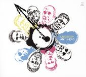

Ibibio Sound Machine:Uyai
The London-based collective, fusing new wave and electro with West African rhythms, moves in a slightly darker direction with its second album. -Paul Simpson

Kneebody:Anti-Hero
The ninth album of genre-bending, instrumental post-jazz from the exploratory quintet. - Matt Colar
Lusine:Sensorimotor
The electronic pop auteur deftly pairs sensory lushness with disorienting manipulations on this strong release. -Timothy Monger
Alasdair Robeerts:Pangs
Recorded with a band in Northern Ireland, the Scottish eccentric's ninth album is another peculiarly charming entry in his sterling catalog. - Timothy Monger